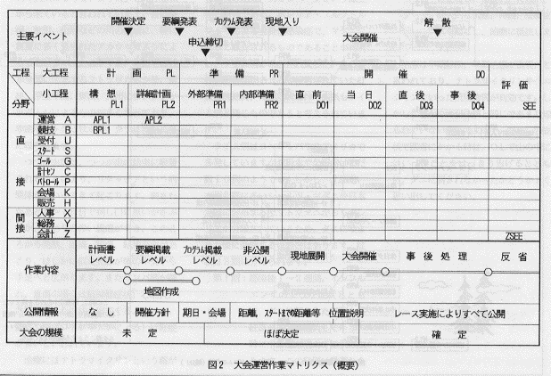
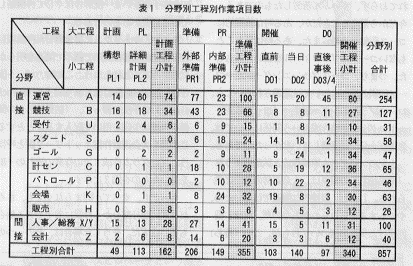
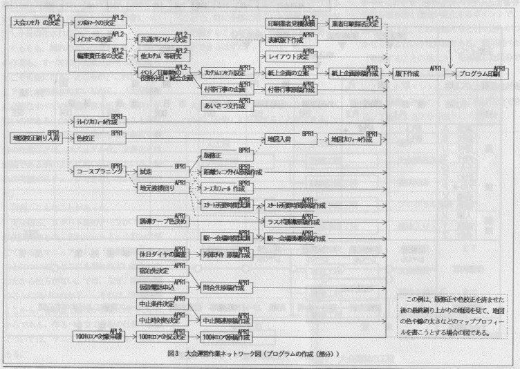

|
 |
【第２部】大会運営作業マトリクス(O-Japan 1994.8月号掲載)
まず全体を視野に入れる
前回、大会運営では作業の漏れや手順の誤りが失敗をもたらすことを指摘し、作業を漏らすことなく、しかも、正しい順序で行うこと、そして、そのための計画が重要であることを述べた。
今日では、多くのクラブが詳しいマニュアルを作成しており、その運営は計画的であるかのように見える。しかし、そこに書かれているのは、大会当日とせいぜい直前の作業のやり方でしかない。言うまでもなく、準備は大会の１年前には始まっているし、大会終了後にも作業は残っている。それが、どういうわけか、直前から当日にかけての作業についてしか文書化されない。
そもそも、漏れのない作業も、正しい順序の作業も、すべての作業項目が明らかになってこそ可能になる。ところが、これだけマニュアル化が推進されていながら、「大会開催に必要なすべての作業を書き出した資料」がないのである。少なくとも私は見たことがない。一部のメンバーしか携わらない事前や事後の作業などは、マニュアル化、文書化とは無縁であるかのように思い込まれている。漏れの有無すらチェックできないのが現状なのだ。
以前、こんなことがあった。
大会前日、スタート班のチーフが「あっ！歩測区間作るの、忘れたーっ！」と言って慌てている。マニュアルには「歩測区間を作る」ことについて、どこにも書かれていなかったのだから仕方がない。では、なぜ、歩測区間のことに気づいたか？──それは「歩測区間ここから」等の立て看板が会場に残っていたからである。作るべき立て看板の仕様や枚数については、マニュアルに書いてあったのである。
まさに現在のマニュアル化を象徴するエピソードと言えよう。細かいことは書いてあって、より肝心なことが抜けている。作業項目さえリストアップしてあれば、このような漏れは起き得ないのに。
マニュアル化の推進を否定するつもりはない。が、今日のような一部現業の細かなhow toばかりに注視したマニュアル化は見直さなければなるまい。重箱の隅を突っ付くことも必要ではある。しかし、それは一番最後にやれば良いことではないか。
つまり、個々の作業のやり方以前に、まず全体を視野に入れることが大切なのだ。大会を開催するために必要な作業項目をすべて紙に書き出し、それに対して未か済かのチェックを入れながら作業を進めていく。そうすることで、常に全体に照らした準備の進行状況を把握することができ、作業の漏れを防ぐことができるはずだ。
分野と工程のマトリクス
大会を開催するために必要な作業は、いくつかの「分野」に分類することができる。一方、それぞれの作業には「実施すべき時期」がある。つまり、すべての作業は「分野」と「実施すべき時期」から成るマトリクス上に位置づけることができるはずだ。
そこで問題になるのが時間軸の区分である。これまで大会運営の時間的な側面を区切る試みは行われていなかったように思う。ここでは「工程」という概念を提唱して、区分を試みたい。
大会運営における工程とは、大会の１ヵ月前とか２ヵ月前といったような暦日による区分ではなく、運営上の主要なイベントによる区分である。事前の主要なイベントとしては、要綱発表、プログラム発表、現地入りなどがある。これらは外部に情報を発表したり、運営者を取り巻く環境が変化するポイントで、簡単に言うと、これを越えると引っ込みがつかなくなるという境界線である。前回述べた「発表することの重大さ」を意識した区分であることは言うまでもない。
こうしたイベントにより、大会運営は計画、準備、開催、評価の４つの大工程に区分できる。工程による区分を以下に示す。
| 大工程 | 小工程 | 境界 |
| 計画工程 | 構想工程 | 大会開催決定まで |
| 詳細計画工程 | 要項発表まで | |
| 準備工程 | 外部準備工程 | プログラム発表まで |
| 内部準備工程 | 現地入りまで | |
| 開催工程 | 直前工程 | 大会前日まで |
| 当日工程 | 大会当日 | |
| 直後工程 | 現地を離れるまで | |
| 事後工程 | 残りの実作業すべて | |
| 評価工程 | 次回へのフィードバック作業 |
他方において、作業項目は運営、競技であるとか、スタート、ゴール、計算センターなどの分野に分けることができる。こうした作業分野の区分は、おおむね運営組織（パート）の区分と一致する。
しかし、大会運営の作業は、これだけではない。大会を開催するためには、運営者の宿の確保、マニュアルの作成、備品購入時の仮払いといったような運営者自身を対象とする作業も必要になってくる。つまり、大会運営の作業には、大会を開催するための直接的な作業のほかに、その直接的な作業の作業者に対してサービスやモノ、カネ、知識、情報などを提供する間接的な作業が存在するのである。
そこで、分野については、一般的な直接分野に人事、総務、会計の３間接分野を加えた１２分野に区分することとした。
さて、これで両方の軸の区分が決まったので、マトリクスを作ってみることにしよう。この分野と工程から成るマトリクスを大会運営作業マトリクスと呼ぶ。図２を参照されたい。

この枠組みに、実際に大会運営の作業項目を書き込んでいったものを、オリエンテーリング・カレンダーの紙面に掲載してある。全部で１９枚あるので、紙面の都合により、何回かに分けて掲載する予定である。
そして、その１９枚のマトリクス上のすべての作業項目を分野別工程別に数えた結果が表２である。

そもそも、私自身に分野による得手不得手があり、マトリクス自体に抽出密度の濃淡があることも否めないので、この数字を用いて論評することは適切ではないかも知れない。とは言え、大会を開催するために何項目の作業が必要か、などということは、おそらくこれまで誰も数えもしなかったことであろう。何はともあれ、約９００項目の作業が必要であることが、ここに判明したわけだ。
全体を洗い出したことにより、漏れの有無だけでなく、残作業があとｎ項目ある、とか、作業項目の消化率がｍ％であるといった風に、作業の進捗状況をデジタルに把握・表現することまで可能になったのである。
ネットワーク図を作る
さて、大会運営作業マトリクスによって、作業の全貌が明らかになった。完了した作業を消し込んでいくことにより、少なくとも漏れについてはチェックできるところまで来たのである。残るは手順の問題だ。
私は、学生時代、４年間を通じてプログラムの編集を担当していたのだが、周辺の作業がプログラムに載せることを意識して進められておらず、ずいぶん苦労したものである。今だから言えることだが、ある時は直観的にコース距離を決め、また、ある時は見たこともないコースのプロフィールを書いたりもした。つまり、コースプランニング→試走→コース印刷の流れについては意識されていても、コースプランニング→試走→（コース確定）→プログラム原稿作成という関係については、意識が十分には浸透していなかったのである。
上記のプログラム原稿作成と試走のような「結果待ち」の関係は、大会運営の随所に見られる。しかし、直接的な関連ではないため、ややもすると忘れられがちなのだ。実は、前回挙げた失敗事例のいずれもが、この「待ち」に関係している。待つべきものを待っていない、あるいは、ある作業を先行させ、その結果を見てから始めなければならないのに、その手順に気づいていない、など。
したがって、これまで明確に意識されていなかった、この「結果待ち」の関係を明らかにすることが重要な意味を持つ。「その作業に着手するためには、何ができていなければいけないか。何と何と何と何が揃っていなければならないのか。」という観点から、現在の作業手順をいま一度解きほぐして再構築してみる必要があるのである。
そこで、マトリクスに書き出した作業項目を、作業の順番に矢印で結んで関連を明らかにしてみることにしよう。この時、パート図(PERT:Program Evaluation and Review Technique ）の手法に習って、「結果待ち」の関係を点線の矢印を用いて記入することとする。この図を大会運営作業ネットワーク図と呼ぼう。プログラム作成までの作業の流れの一部を書いたものを図３に示す。
|
 |
もっとも、すべてが固まらなくても、さみだれ式に部分部分から作業に着手できる場合も多いはずだ。そうした場合は、その一つの「部分」を作業項目の単位と考えれば良い。図３で各原稿の作成を１項目として扱っているのは、その例である。
さて、どうだろう。ネットワーク図に書き出したことにより、コースプランニングや試走はもちろん、地元挨拶回りもがプログラム印刷に影響を与えることが明らかになった。このように、ネットワーク図を作成することにより、それぞれの作業の位置づけや他との関連、さらには遅れた場合の影響範囲までもが明確に意識できるようになる。しかも、その意識は、これを見たすべての人に共有されうるのである。
実のところ、私自身、このネットワーク図を完成させたわけではない。しかし、完成を待たなくても、そのエッセンスだけなら発表できるはず──そう考えて連載に踏み切った。どうか皆さんも、このネットワーク図を作りながら、これまでの手順を見直すプロセスを体験していただきたい。
なお、ＰＥＲＴについては『計画の科学』（加藤昭吉著、講談社ブルーバックス）に詳しい。一読されることをお勧めしたい一冊である。